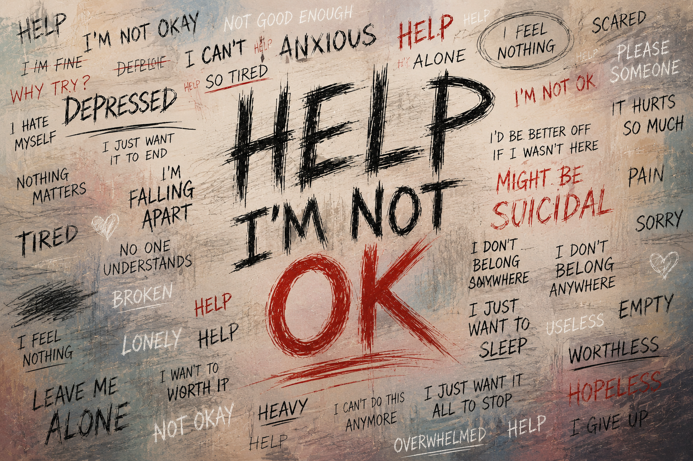

You can smile through Sunday and still come home heavy.
John's been there, and he made this for you. Give him a few minutes.
You don't have to have it all together to be okay. And you're not as alone in this as it feels.
Send Me the DetailsA free program from John Fowler. Currently in beta.
You know how to answer "How are you?" without really answering it.
Fine. Good. Hanging in there. You say it on a Sunday morning, in the grocery line, to the people who love you most. And underneath it, something is heavy. Maybe it has been for a while.
Church can be one of the hardest places to be honest about that. Everyone seems to be doing well. So you put on the face, sing the songs, and carry the weight home with you, still alone with it.
Needs John's words I've sat with a lot of people who were doing exactly that. A true, plain line goes here from John — that he's been on both sides of it, has walked with people through hard seasons, or has been in one himself. This is where his honesty earns the reader's trust, so it should be his actual experience.If any of that is you right now, I'm glad you found this. You can put the face down here.
What this is
"Help, I'm Not Okay" is a free program about exactly that — admitting you're not okay, and finding your way toward hope without pretending and without performing.
It started as five sermons. Needs John's words Confirm the origin and add a sentence on where these came from — the season or the people that prompted them. That it grew out of real preaching to real people is part of why it lands. Now it's a short book, thirteen chapters, built to walk with you a piece at a time.
It isn't a fix-it plan or a list of steps to get your life back in order. Needs John's confirmation Confirm the core promise. It's permission to be honest about where you are, and a faith-rooted path toward hope and through the hard season — the kind a pastor would actually say to you across a table, not from a stage.
What you'll get
The honest teaching from the book and the sermons it grew out of, in plain words.
A way through a hard season that doesn't ask you to pretend you're fine.
A reminder, in the moments you need it, that you're not carrying this alone.
Early access to the free beta before it opens up more widely.
About John
I'm John Fowler — a pastor and a writer. Needs John's words Where he pastors and how long, plus one true, human line about his own story or why this matters to him personally.
I wrote "Help, I'm Not Okay" because I got tired of watching good people suffer quietly while pretending everything was fine — and because I've needed this message myself.
Get in early
Leave your name and email and I'll send you more about "Help, I'm Not Okay" and let you know when the free beta opens. No cost, no pressure. Just a heads-up when it's ready.
John will be in touch with more about "Help, I'm Not Okay" and a heads-up when the free beta opens.